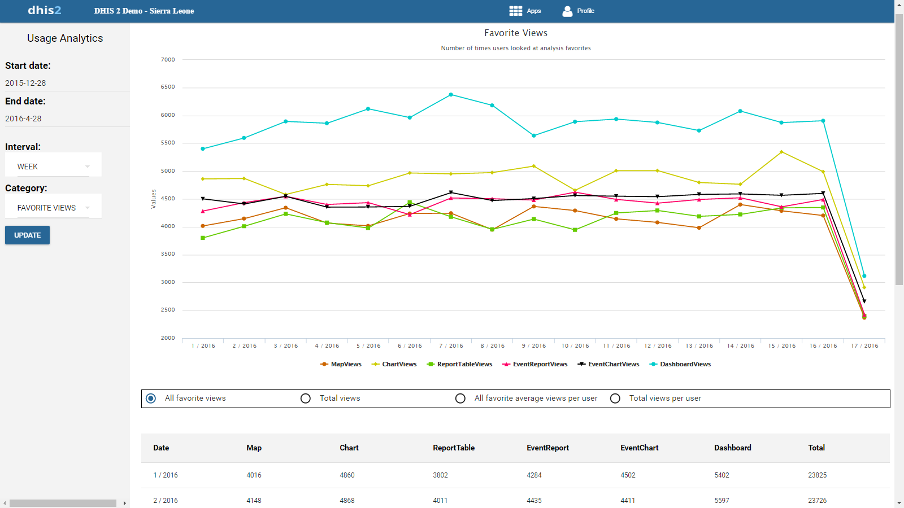

Table of Contents
|  |
The Usage Analytics app lets you visualize statistics on how users are working with the Dashboard, Pivot Table, GIS, Event Visualizer, Data Visualizer and Event Reports apps within DHIS 2. This includes:
How many times people have loaded charts, pivots tables and dashboards.
How many favorites users have created .
How many users that are logging in versus total number of users.
To create an usage analytics graph:
In the Apps menu, click Usage Analytics.
Select a start date.
Select an end date.
Select an interval: day, week month or year.
Select a category.
Table 30.1. Category types
|
Category type |
Description |
|---|---|
|
Favorite views |
Number of times users have looked at favorites during the selected interval. You can switch between All favorite views, Total views, All favorite average views per user and Total view per user. The table updates automatically with the corresponding values. |
|
Favorites |
Number of analysis favorites users have created during the selected interval. The analysis favorites are fetched from the Dashboard, Pivot Table, GIS, Event Visualizer, Data Visualizer and Event Reports apps. |
|
Users |
Number of users in the system during the selected interval. |
Click Update.
(Optional) Click a series label to hide the corresponding graph.